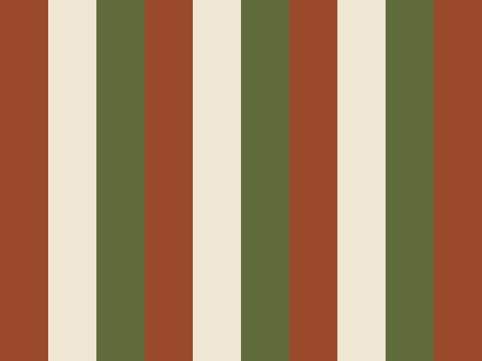
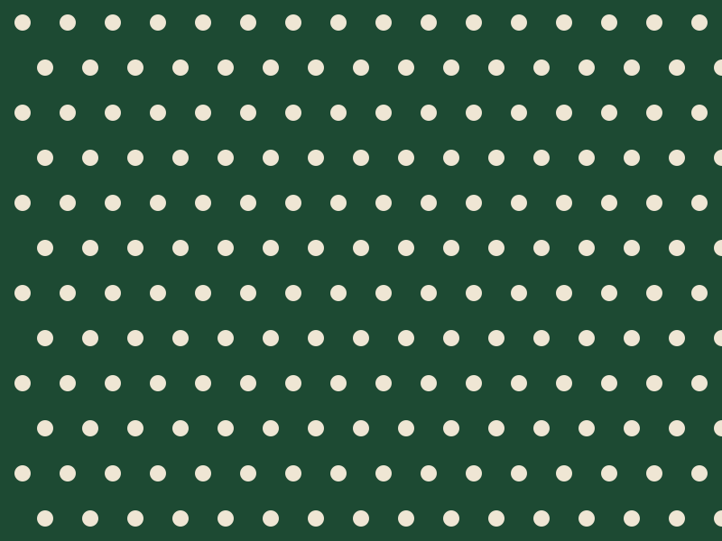

Fashion
A coat built from six undyed wools
At Hollowbrook Mills, a winter coat is assembled from the natural shades of six fleeces, and nothing is dyed.
Invented magazine. The Weft Review is an invented magazine for a research replica. None of its stories, bylines, brands, events or places are real, and all dates are sample data.
Special issue (sample)
Six stories about hands, tools and slow processes. Every maker, mill and place in this issue is invented.
Cloth carries the marks of whoever handled it: a pressed fold, a re-dyed edge, a darn in contrasting thread. This issue follows those marks back to the benches where they were made.
You will find a coat woven from six undyed fleeces, a pleating room run on paper templates, and a dye garden grown for a single shade of blue. We hope it sends you to look more closely at what you already own.

Fashion
At Hollowbrook Mills, a winter coat is assembled from the natural shades of six fleeces, and nothing is dyed.
Fashion
Atelier Nimbrel sets every fold by hand against a numbered paper template.
Fashion
Two dips, a day of air and a second dip: why one dye house refuses to hurry blue.
Fashion
Contrasting stitches, patched elbows and a repair counter that is part of the shop.
Culture
Wenna Thackray talks paper, chalk and the thread that decides how a garment hangs.

Travel
Madder, weld and woad: a walking itinerary through gardens grown for colour.